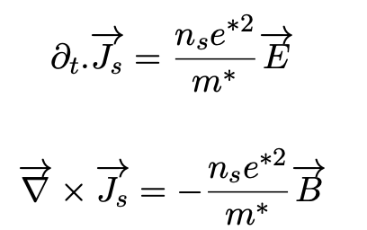
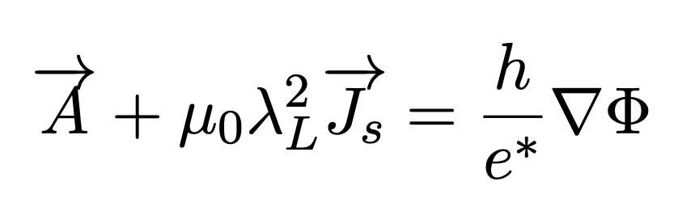
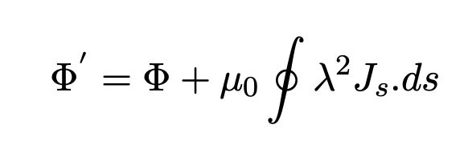
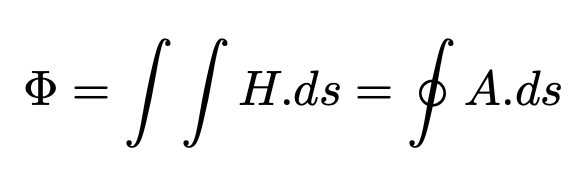
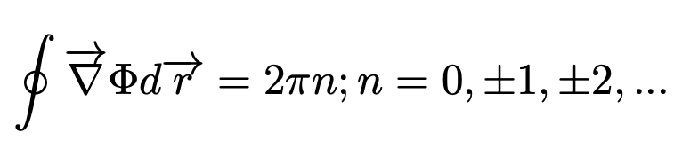
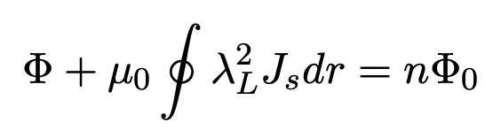

Phase coherence
The effect demonstrates that the superconducting condensate maintains a coherent quantum phase around a macroscopic closed path.
Superconductivity • Flux Quantization • Quantum Interference
The Little–Parks effect is a striking example of macroscopic quantum behavior in a superconductor. When a superconducting ring is placed in a magnetic field, its transition temperature — and therefore its resistance near the transition — oscillates periodically with the magnetic flux threading the ring.

The Phenomenon
Consider a thin superconducting ring cooled close to its superconducting transition temperature. If a magnetic field is applied perpendicular to the ring, magnetic flux passes through its central opening.
Because the superconducting state is described by a complex order parameter with a well-defined phase, the phase accumulated while travelling once around the closed ring cannot take an arbitrary value. The superconducting wavefunction must return to the same value after one complete circuit.
This requirement produces a quantization condition. As the applied magnetic flux increases continuously, the preferred winding number of the superconducting state changes discretely.
Close to the superconducting transition, these changes slightly modify the free energy and therefore the transition temperature \(T_c\). If the sample is measured at a fixed temperature within the transition, the modulation of \(T_c\) appears experimentally as an oscillation of resistance with magnetic field.
The resistance oscillation is not simply a classical magnetoresistance effect. Its periodicity reflects the quantization of the superconducting condensate around a closed loop.
Periodicity
For a conventional superconductor, the relevant charge carriers in the condensate are Cooper pairs with charge magnitude \(2e\). Consequently, the superconducting magnetic flux quantum is
If the effective area enclosed by the superconducting ring is \(A_\mathrm{eff}\), the approximate magnetic-field period is
This relationship is particularly elegant because the geometry of the fabricated device determines the field period of the quantum oscillation.
Fluxoid Quantization
In a superconducting ring it is useful to distinguish between magnetic flux and fluxoid.
Magnetic flux describes the magnetic field passing through an area. The fluxoid additionally accounts for the contribution associated with the circulating superconducting current.
Deep inside a sufficiently thick superconductor, where the supercurrent along the chosen contour is negligible, fluxoid quantization can reduce approximately to ordinary flux quantization. In thin or mesoscopic structures, however, the current contribution can be important.

The London equations relate the superconducting current density to electric and magnetic fields and introduce the London penetration depth, which determines how magnetic fields decay inside a superconductor.
Superconducting Phase
The superconducting state can be represented by a complex order parameter
where \(|Ψ|\) describes the amplitude of the superconducting condensate and \(θ\) is its phase.
When we travel once around a closed superconducting loop, the wavefunction must remain single-valued. Therefore, the total phase change must be an integer multiple of \(2π\):
Combining this phase condition with the relationship between the superconducting current and vector potential leads directly to fluxoid quantization.


The Quantization Condition
Integrating around a closed contour that surrounds the hole of the superconducting ring produces a term associated with the magnetic flux and another associated with the screening current.

The requirement that the superconducting phase winds by an integer multiple of \(2π\) gives a discrete set of allowed fluxoid states.


Physical Picture
The applied magnetic flux generally does not exactly equal an integer number of flux quanta.
The superconducting condensate therefore establishes a circulating current so that the system occupies one of its allowed fluxoid states.
As the magnetic field changes, the kinetic energy associated with this circulating supercurrent changes. Near the transition temperature, this slightly shifts the free-energy balance between the superconducting and normal states.
The result is a periodic modulation of \(T_c\). Measuring resistance at a temperature on the superconducting transition converts that small \(T_c\) modulation into an observable resistance oscillation.
Why It Matters
The effect demonstrates that the superconducting condensate maintains a coherent quantum phase around a macroscopic closed path.
The oscillation period directly reflects the discrete fluxoid states allowed in a multiply connected superconductor.
Conventional \(h/2e\) periodicity is associated with a condensate whose elementary superconducting charge is \(2e\).
The field period depends on ring area, making nanofabrication part of the physics rather than simply a way of preparing the sample.
My Research
From my doctoral research
During my PhD, I worked with electron-doped cuprate superconductors, including Pr2−xCexCuO4 (PCCO), and fabricated sub-micron superconducting structures for quantum transport experiments.
Little–Parks measurements are particularly interesting in unconventional superconductors because they connect a directly measurable transport signal to the phase coherence and flux periodicity of the superconducting state.
Experimentally, this means that materials growth, device geometry, nanofabrication quality, low-temperature transport, and magnetic-field control all become part of the same physics problem.
From Physics to Fabrication
A Little–Parks measurement is a good example of why device fabrication cannot always be separated from fundamental physics.
The lithographically defined ring area determines the expected oscillation period. Edge damage can alter superconductivity. Line width affects current distribution. Film homogeneity influences the transition. Contact geometry affects the measured resistance.
In this kind of experiment, fabrication is not merely sample preparation — it helps define the physical system being measured.
Superconducting Rings
The Little–Parks effect is one of the experiments I like because the idea is conceptually simple — a superconducting ring in a magnetic field — yet the measurement exposes the phase coherence of a macroscopic quantum state.